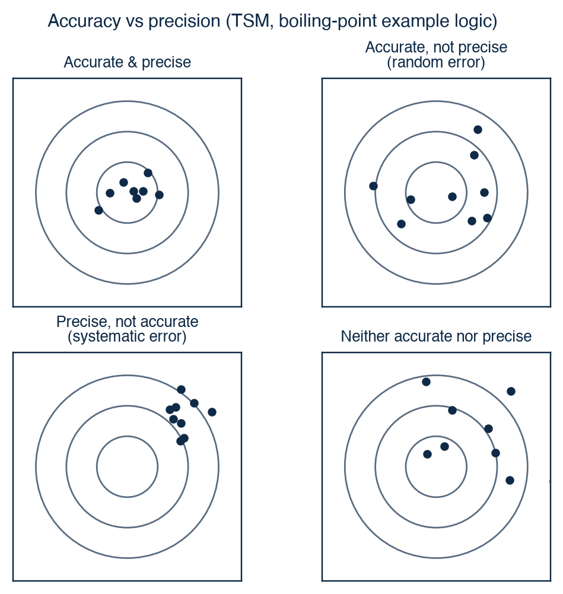
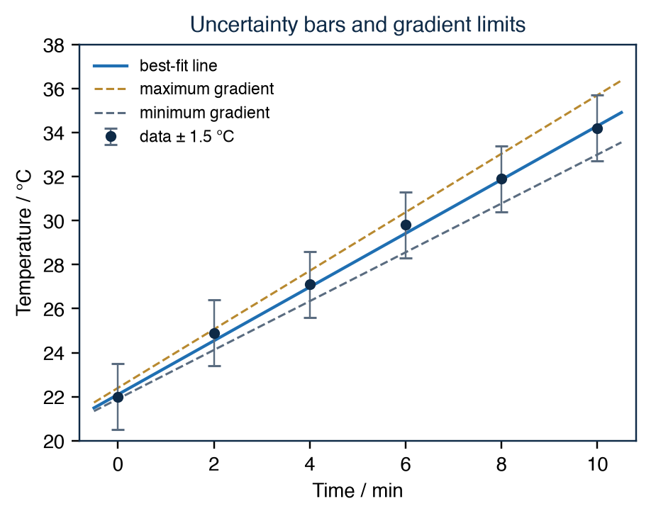

L1 Tools Skills Handbook · Module 3 · IB Chemistry (Guide 2025, p.34–35 aligned) · SL core + AHL flags · Student version
Every data-based question you will meet — in Paper 1B, in your IA, and in the practical work of every unit — is a Tool 3 question in disguise: reading values with units, quoting them to the right precision, propagating uncertainties through a calculation, and drawing or interpreting a graph. Master this module once, and it pays back in all ten units of the course.
Use International System (SI) units and prefixes. Learn this table — it is assumed knowledge in every paper.
| Prefix | Symbol | Multiple | Example in chemistry |
|---|---|---|---|
| giga | G | 109 | kJ mol−1 of ATP hydrolysis scaled up |
| mega | M | 106 | 3.5 × 106 J (scientific notation) |
| kilo | k | 103 | kJ, kg, kPa |
| deci | d | 10−1 | dm3 (the "litre" of chemistry) |
| centi | c | 10−2 | cm3 (glassware scale) |
| milli | m | 10−3 | mg, mL, mmol |
| micro | µ | 10−6 | µg dm−3 (trace pollutants) |
| nano | n | 10−9 | nm (wavelength, particle size) |
| pico | p | 10−12 | pm (atomic radii) |
Conversions that appear constantly: 1 dm3 = 1000 cm3; 1 m3 = 1000 dm3; T/K = θ/°C + 273; 1 kJ = 1000 J. Always carry units through the calculation line by line — in P1B, an answer with a missing or wrong unit loses the mark even if the number is right.
Rules for counting significant figures (s.f.): all non-zero digits count; leading zeros never count (0.0015 has 2 s.f.); trailing zeros after the decimal point count (34.10 has 4 s.f.); captive zeros count (1.005 has 4 s.f.).
Rules for answers: in multiplication/division, quote the answer to the s.f. of the least precise value used; in addition/subtraction, quote to the fewest decimal places. When the question says "to an appropriate number of significant figures", this is exactly what it means — P1B says it constantly.
Systematic errors have identifiable causes in the design, shift every result the same way (consistently higher or lower), are not reduced by repetition, and can be removed by improving the method (e.g. heat loss in calorimetry). Random errors scatter results either side of the true value and are reduced by repetition and averaging.
Accuracy = closeness to the true value (small systematic error). Precision = number of significant figures / reproducibility (small random error). You can have either without the other:
| Boiling point of water (true value 100.0 °C) | Uncertainty | Verdict |
|---|---|---|
| Experiment 1: 99.5 °C | ± 0.5 °C | more accurate, less precise |
| Experiment 2: 98.15 °C | ± 0.05 °C | less accurate, more precise |

Every raw reading carries an uncertainty, written as a range (±). The uncertainty is quoted to the same number of decimal places as the measurement. How to get it:
| Instrument | Rule | Worked example |
|---|---|---|
| Digital balance (2 d.p.) | uncertainty = smallest scale division (the last digit) | 1.23 g ± 0.01 g |
| Digital balance (3 d.p.) | same rule | 1.233 g ± 0.001 g |
| Analogue glassware (burette, thermometer) | uncertainty = ½ × smallest division | smallest division 0.1 cm3 → 48.80 cm3 ± 0.05 cm3 |
| Manufacturer-stated | use the stated value | as on the apparatus |
When one apparatus is used for a whole data set, put the uncertainty once in the column header (e.g. "Mass / g ± 0.001") instead of repeating it per cell. Some sources (reaction timing, endpoint judgement) are not quantifiable — note them as qualitative error sources in your evaluation instead.
| Operation | Propagate by | Example |
|---|---|---|
| Add / subtract | sum the absolute uncertainties | (24.200 ± 0.001) − (21.500 ± 0.001) = 2.700 ± 0.002 g |
| Multiply / divide | sum the percentage uncertainties | see Practice Q5 |
| Raise to a power n (AHL) | fractional uncertainty × n | (0.30 ± 0.0667)3 → fractional 0.0667 × 3 = 0.20 |
| n-th root (AHL) | fractional uncertainty ÷ n | mirror of powers |
| Mean of repeats | uncertainty stays as in the component values | three ΔH trials ± kJ mol−1 each → mean keeps ± same |
Significant figures protocol for uncertainties: if the final percentage uncertainty ≥ 2%, quote it to 1 s.f.; if < 2%, to no more than 2 s.f. Also know the difference between percentage uncertainty (precision of your own data) and percentage error (your result vs the literature/accepted value — used to judge validity in P1B evaluation questions).
The guide expects you to: plot with appropriate scales and axes (independent on x, dependent on y); draw lines or curves of best fit — never join dot-to-dot; interpret gradient, intercepts, changes in gradient, maxima/minima and areas; draw and interpret uncertainty bars; extrapolate and interpolate; apply the coefficient of determination R2 (AHL-friendly) to judge fit; and sketch unscaled graphs to describe trends qualitatively.
With uncertainty bars, the gradient itself gets an uncertainty: draw the maximum-gradient and minimum-gradient lines through the bars ("lines of worst fit"). Then:
final gradient = (max gradient + min gradient) / 2 uncertainty = ½ (max − min)

If one variable's uncertainty dwarfs the other's, take the total uncertainty from the larger alone — the smaller is negligible.
| Skill from this module | Typical P1B command |
|---|---|
| Reading data with units | "State / identify the value of …" from a table or graph |
| Appropriate precision | "…giving your answer to an appropriate number of significant figures" |
| Recording uncertainty | "Deduce the uncertainty in the mass / volume / temperature" |
| Propagation | "Calculate the percentage uncertainty in the concentration" |
| Percentage error | "Compare with the accepted value and comment on the difference" |
| Graphs | "Draw a best-fit line", "comment on the trend / anomalous point", "estimate … at x = …" |
| Rates of change | "Determine the rate at t = …" (tangent to a curve) |
Q1. State the number of significant figures in: (a) 48.80 cm3 (b) 0.0015 mol (c) 3.5 × 106 J (d) 1.005 g.
Q2. Convert: (a) 25 °C to K (b) 250 cm3 to dm3 (c) 0.103 g cm−3 to g dm−3 (d) 452 nm to m, in scientific notation.
Q3. Write each reading with its uncertainty: (a) a two-decimal balance reads 0.95 g; (b) a three-decimal balance reads 23.226 g; (c) a thermometer with 1 °C divisions reads 21.0 °C; (d) a burette (0.1 cm3 divisions) reads 22.30 cm3.
Q4. Mass by difference. Crucible = 21.500 g ± 0.001 g; crucible + hydrated copper(II) sulfate = 24.200 g ± 0.001 g. Determine the mass of the sample and its absolute uncertainty.
Q5. Concentration from mass and volume. m(solute) = 6.5 g ± 0.1 g; V(solution) = 63.10 cm3 ± 0.05 cm3. Calculate the concentration in g cm−3 (to an appropriate number of s.f.) and its total percentage uncertainty.
Q6. Determining x in CuSO4·xH2O (links to Practical 9, Unit 1). Using a three-decimal balance: crucible = 21.500 g; crucible + hydrate = 24.200 g; after heating to constant mass = 23.226 g (Mr: CuSO4 = 159.6, H2O = 18.02). Determine x, the absolute uncertainty in the mass of water lost, and the percentage uncertainty in x. Quote x appropriately.
Q7. Rate from tabulated data. Magnesium + excess HCl, gas collected: t = 0, 10, 20, 30, 40, 50 s; V = 0, 28, 45, 58, 66, 70 cm3. (a) Determine the average rate over the first 10 s. (b) State, with a reason, how the rate changes with time. (c) On the grid, sketch the curve of V against t.
One sentence each: (1) When would you quote an answer to 1 s.f.? (2) Your titre repeats agree to ±0.05 cm3 but differ from the literature by 3% — is that an uncertainty or an error, and which verdict does it support?
Sources: IB Chemistry Guide 2025 (Tool 3, p.34–35); Chemistry Teacher Support Material (First assessment 2025), Mathematics chapter. Practice data adapted from the department practical framework (Books 1–4).